Псковско-Островская наступательная операция
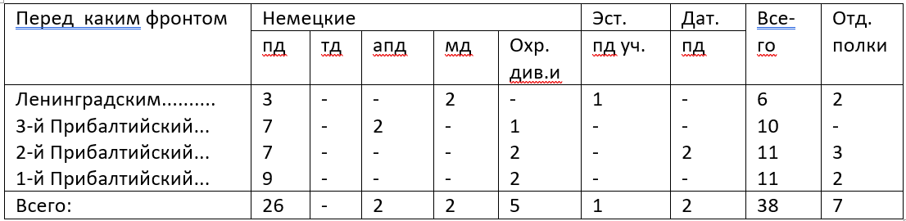 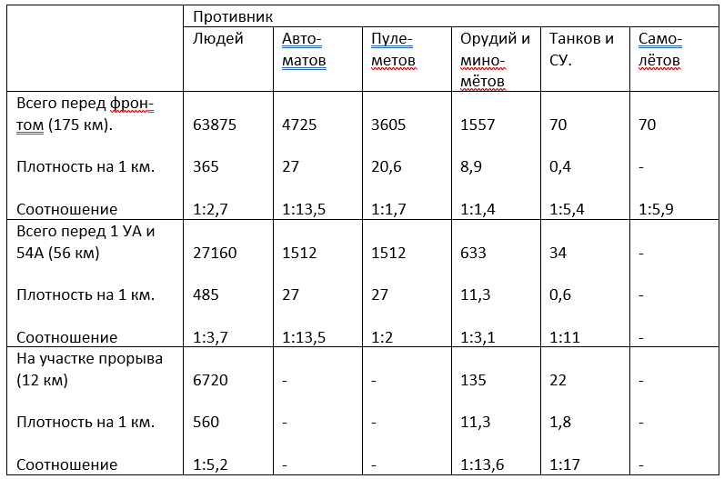 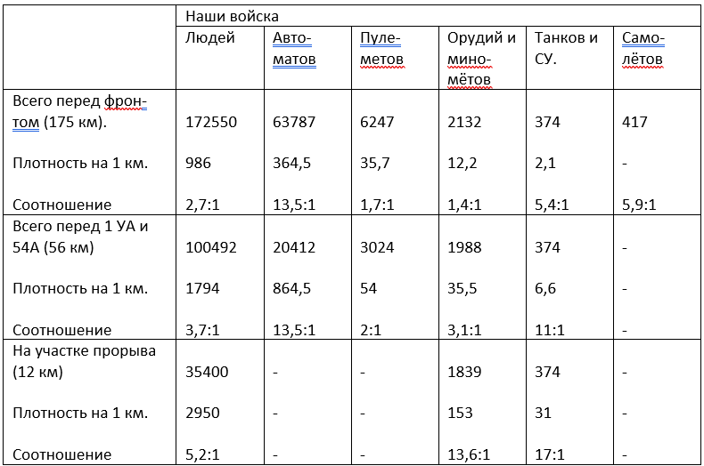 16 июля 1944 года. Мемуары. 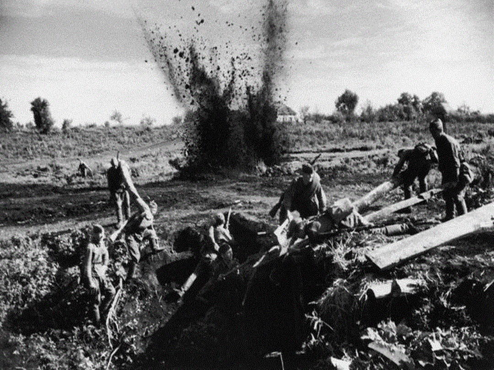 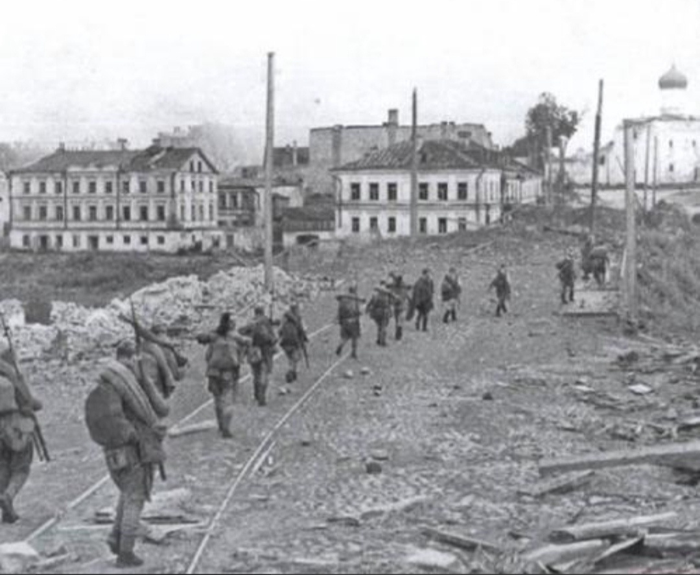 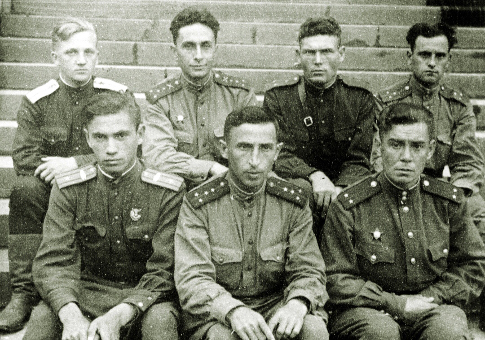 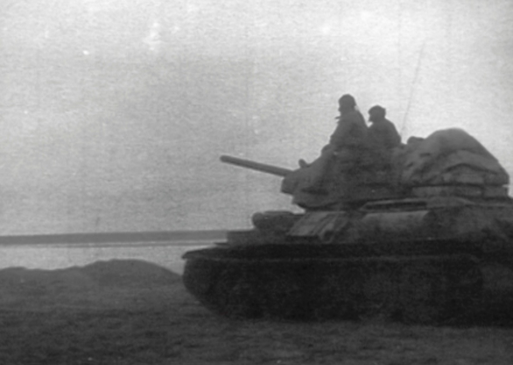 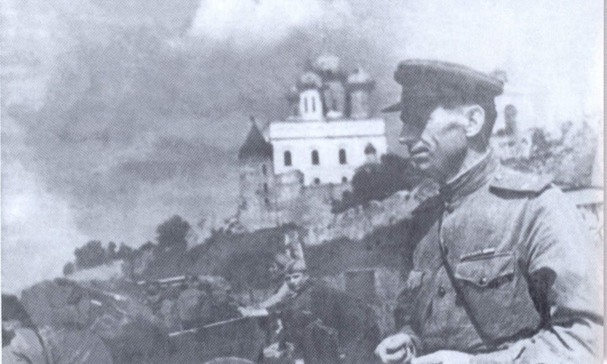 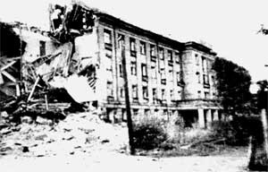 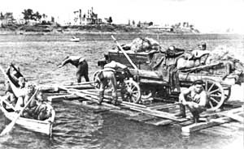 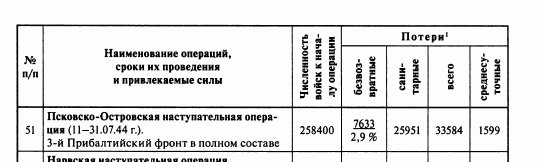 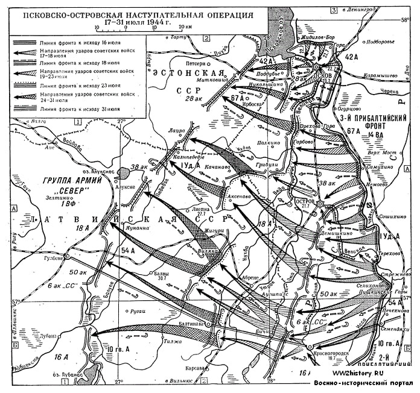 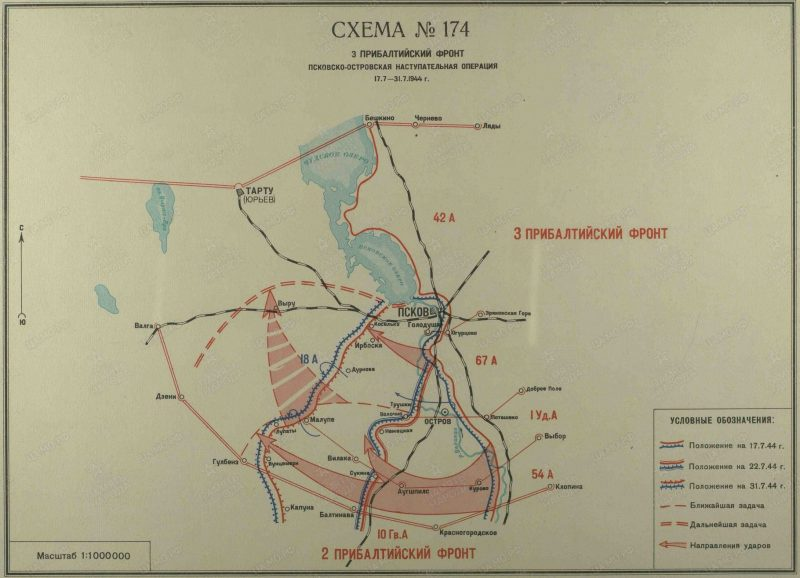 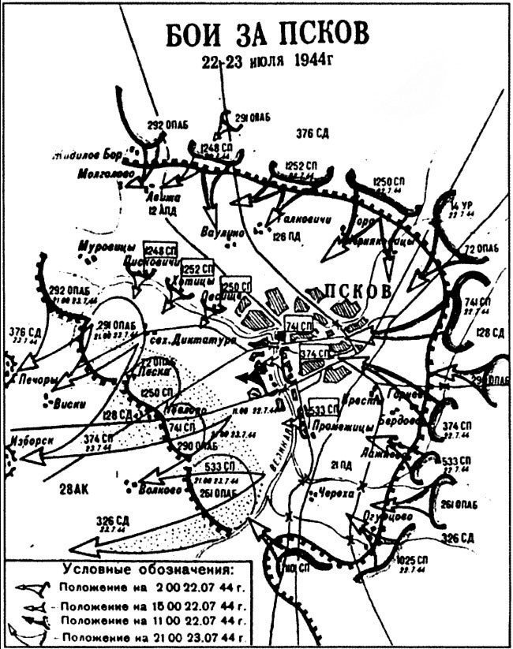 Пояснительная записка
Введение
1944г - это время решающих побед Красной Армии в Великой Отечественное Войне, несмотря на то что враг был ещё очень силён, наши бойцы сумели освободить всю территорию СССР и выйти в страны Европы начав и освобождения от неминуемой оккупации одним из этих “кирпичей” на пути Великой победы было освобождение города Пскова в июле 1944г. Гитлеровское командование называло Псков “ключом к парадным дверям Ленинграда”. Попытки освободить Псков в феврале-апреле 1944г успеха не имели, в среднем удалось продвинуться на 18-20 км, это было связано со сложной местностью: много рек и болот, упорно сопротивление оказывали бойцы Вермахта. С октября 1942г по 1944г продолжилось строительство оборонительной линии “Пантера”, значительная часть этого укрепления и проходили по Псковской равнине. Это было очень серьёзный оборонительный рубеж.
Оперативная обстановка. Силы сторон перед операцией.
Район боевых действий -это Псковская область у Восточной границы Эстонии и Литовская ССР и выступ территории Ленинградской области. Это холмистая местность, местами сильно заболочено, много рек и озёр, лес расположен неоднородно местами, много шоссейных и грунтовых дорог, не смотря на то, что рубеж Пантера не был окончательно достроен гитлеровцами. К началу 1944г он представлял собой достаточно развитую систему обороны около 170 км в длину и от 4до 6 км в ширину. Это система опорных пунктов, соединённых между собой траншеями и ходили сообщения. Города Псков и Остров прикрывались специальными позиции имелось много дотов и дзотов масса противотанковых препятствий. В целом хорошо продумана маскировка. Прорыв такого мощного рубежа требовал особой подготовки.
Силы сторон
Оценка противника
Общая группировка противника в Прибалтике на 15.7.44 г.
В Прибалтике действовала СГА (штаб Рига) в составе АГ “Нарва”, 18 и 16 армии.
Северной группой армии командовал генерал-полковник Линдеман, который впоследствии был заменён генерал-полковником Шернером.
Армейской группой “Нарва” (штаб Реквере) командовал генерал Физнер, впоследствии сменённый генералом пехоты Грассер.
18А (штаб Валга) командовал генерал пехоты Лох.
16А (штаб Паневежис) командовал генерал артиллерии Ганезен.
Всего в Прибалтике действовало 38 дивизий (см таблицу №1)
К середине июля советским войскам противостояли к 16.7.44 перед 3-м прибалтийским фронтом действовали 18А и часть сил 16А противника в составе 28АК (12апд, 21пд, 126пд, 207охр. дин), 38АК(30пд, 121пд, 32пд, 21апд) и 50АК(83, 218 и 69пд).
Перед 42А. На участке Варнья, Кожино на фронте , протяжением 146 км (из них 110 км по побережью оз.Псковское) оборонялись части эст.пд неустановленной нумерации. 207 охр.див, 12апд, 126пд. Всего четыре пд. Наибольшая плотность - один батальон на 3 км на участке Молгово, Кожино.
Перед 67А. На участке (иск) Кожино, Зубова гора на фронте 66 км оборонялись 21пд с 540 штраф.батальоном, 30пд с 480 зап.батальоном, 121пд с 1 и 2 штраф.батальонами, 32пд. Всего четыре пд со средней плотностью один батальон на 2 км фронта.
Перед 1 Уд.А. На участке (иск) Зубова гора, (иск) Суки на фронте 42 км оборонялись 21апд. 83 пд. Имея среднюю плотность один батальон на 2,6 км фронта.
Перед 54А. На участке Суки, (иск) Брюшково на фронте 36 км оборонялась 218пд, усиленная 3 велоохранным полком. Средняя плотность на этом участке составляла: 1 батальон на 3,3 км фронта.
Таким образом, наибольшая плотность группировки противника была на центральном участке фронта. Это обстоятельство объяснялось стремлением противника наиболее надёжно прикрыть Островское направление. Средняя плотность живой силы, в среднем не превышает уставных норм в жестокой обороне (2-2,5 км фронта на 1 батальон).
Резервы. В Районе Псков - до полка 12апд и два батальона 126пд; в районе Остров - до полка 32пд и юго-зап. Пушкинские горы - 69пд.
Наличие незначительных резервов свидетельствует о том, что немцы не располагали достаточными силами, которые можно было бы выделить в оперативный резерв.
В связи с этим характерно отметить, что противник стремился этот пробел (отсутствие оперативных резервов) восполнить широким манёвром сил, находящихся в первой линии.
Так, например, удар Красной Армии по центральной группировке немцев в конце июня 1944г. вынудил их немедленно, буквально на другой день операции выкраивать часть сил на неатакованных участках фронта, за счёт расширения участков, остающихся дивизий и ввод в бой различных спец.частей и подразделений.
Таким образом, в конце июня и в начале июля из состава группировки, действующей перед 3 Прибалтийским фронтом, немцы перебросили в район Двинск части 212, 215 и 122пд. Позднее (во второй половине июля) туда же переброшена и 126пд.
Артиллерия. Общее количество действовавших перед фронтом артдивизионов к моменту перехода наших войск в наступление составляло 38 дивизионов ДА и 5 дивизионов артиллерии РТК, позиционные районы которых были засечены.
Танки. Всего перед фронтом отмечалось до 125 единиц танков и самоходных орудий, которые принадлежали 184 бригаде штурмовых орудий и 502 тяжёлому танковому батальону. В это число входят также самоходные установки, находящиеся в составе противотанковых дивизионов пехотных дивизий.
Авиация. Перед фронтом отмечено всего к 17.7 225 самолётов противника, из них - 50 бомбардировщиков, 105 истребителей, 40 разведчиков дальнего действия и 30 самолётов войсковых разведчиков. ВВС противника базировались на аэродромах.
Немецкое командование, стремясь сковать наши силы в Прибалтике, прикрыть подступы к восточной Пруссии и удержать Финляндию от выхода из войны решило во что бы то ни стало удерживать Прибалтику.
[1, стр.15-18]
Со стороны Советской Армии операцию осуществлял 3-й Прибалтийский фронт, под командованием И.И.Масленникова.
Состав фронта:
42-я Армия. Командующий генерал-лейтенант В.П. Свиридов.
67-я Армия. Командующий генерал-лейтенант В.З.Романовский.
54-я Армия. Командующий генерал-лейтенант С.В.Рогинский.
1-я Ударная Армия. Командующий генерал-лейтенант Н.Д. Захватаев.
15-я воздушная Армия. Командующий генерал-лейтенант авиации Н.Ф. Науменко.
В итоге всех мероприятий, проведенных в подготовительный период, войска фронта на направлении главного удара 16.7.44 закончили подготовку и были готовы к выполнению задач, поставленной директивой Ставки Верховного Главнокомандующего от 6.7.44 №220135 по прорыву сильно укрепленной оборонительной полосы противника со Стрежевского плацдарма.
На направлениях Псков и Остров (вспомогательной направление фронта) войска 42 и 67 армий так же закончили подготовку и были готовы к активным действиям в зависимости от развития успеха на главном направлении.
Войска фронта 16.7.44 были сосредоточены в следующей группировке:
а) в направлении главного удара (1 Уд. и 54А) 1 эшелон (дивизии 1Уд. и 54А) - пятнадцать стрелковых дивизий со всеми средствами усиления фронта, в том числе вся авиация 14 Воздушной армии.
б) вспомогательной направление (42 и 67А) - семь стрелковых дивизий и один УР.
Таким образом, из двадцати пяти дивизий, коими располагал фронт, на направление главного удара было представлено на схеме №3.
Соотношение сил на 16.7.44 - см. таблицу ниже сего.
[2, стр.54-56]
Ход боевых действий
Операция проводилась в два этапа.
1 этап (17-23.7.44) - прорыв 1 УА и 54А обороны противника со Стрежневского плацдарма и выход войск левого крыла фронта на рубеж Грибули, р.Ворожа, Вилака, Балтинава.
1 ЭТАП (17-23.7.44) - прорыв 1 УА и 54А обороны противника со Стрежневского плацдарма и выход войск летото крила фронта на рубеж ГРИБУЛИ, Р.ВОРОЖА, БИЛАКА, БАЛТИНАВА.
Началу активных действий войск фронта предшествовали активные действия войск 2-го Прибалтийского фронта (сосед слева), перешедшего в наступление 9.7.44 южнее и юго-восточнее НОВОРЖКВ. Успешные действия войск 2-го Прибалтийского фронта создали угрозу левофланговой группировке войск противника перед 3 ПБФ, обороняющимся на восточном берегу р. ВЕЛИКАЯ, на выступе в район сев.вост. ПУШКИНСКИЕ ГОРЫ, эта угроза вынудила противника к частичному от ходу с целью выравнивания своей оборонительной линии по рубежу Р.ВЕЛИКАЯ.
321ед в ночь на 11.7.44, действуя усиленными отрядами в районах ФЕДОРЫТИНО, ТЕЛЯКОБА, АРАПОВО, овладела указанными населенными пунктами и, установив, что противник частями 218пд начал частичный отход в западном и юго-западном направлениях, с 5,00 11.7.44 перешли в наступление на всем фронте. Сбивая группы прикрытия противника, преодолевая минированные участки дорог, дефиле и завалы, дивизия к исходу 12.7.44 с боями, освободив 75 населенных пунктов, в том числе районный центр ПУШКИНСКИЕ ГОРН, вышла и полностью очистила от противника восточный берег р.БЕЛИКАЯ на участке СЕЛИХАНОВО, ПЕЧЕХНОВА. В последующие дни дивизия продолжала действовать усиленными отрядами и с боями к 16.7.44 вышла на восточный берег р.ВЕЛИКАЯ на участке (иск) ПЕЧЕХНОВА, ЛЕВИНЫ, СЕМКНДЯИХА, захватив плацдарм на западном берегу р. Великая в районе ДНКИНО.
В ходе боевых действий, проведенных с 11 по 16.7, командующий 54 армией приказал командиру 111ск выдвинуть 225сд на левый фланг армии и к исходу 16.7 дивизия сосредоточилась в районе РАХОВО, КАРКИ, ДУКОВО, имея задачу - содействуя успеху прорыва на направлении главного удара армии (63 ГБ.сд и 245сд), форсировать р.ВЕЛИКАЯ В районе ВЕЛИКОЕ СЕЛО, ЮНКИНО и, взаимодействуя с 321сд, овладеть КРАСНОГОРОДСКОЕ.
В течение 11-16.7.44 войска фронта севернее ПУПКИНСКИЕ ГОРЫ, оставаясь на занимаемых рубежах, уничтожали огнем живую силу и технику противника и в полосах всех армий вели разведку. Войска 1 д. и 54 армий к утру 16.7.44 заняли исходное положение:
1. Уларная Армия -
14 Гв.ск - 146сд, прикрывая правый фланг армии, занимала оборону на широком фронте на рубеже: КАМОРЫ, ПУБИНА ГОРА, СИГО РИНО, СТАНКИ, ПОДБОРНАЯ.
23 Гв.сд - на участке сев.вост.окраина НОВ.ПУТЬ, АЛУФЕРОВО. 33сд - на рубеже 1,5 км зап.АЛУФЕРОВО, отд.дома (500 м. сев.вост.БЕЛЯКОВА).
12 Гв.ск - 52 ГБ. сд - на рубеже поссе (1 км сев.ност.БЕЛЯКОВА), СТРЕЖНЕВО.
28 2сд (второй әпелон) по полкам в районе: СИМУШКОВО, МАСЛОВО, РЕДКИНО.
Подвижная группа армии в районе леса (1 км юго-вост. Тупицы) СТЕПУТИНО, Киты.
Разгранлиния справа (с 67А) - ФОМКИНА ГОРА, ДОБРОЕ ПОЛЕ, ПОГОРЕЛКА, ОСТРОВ, южный берег р.ВЕЛИКАЯ И Р.КУХВА ДО БОЛОЧНО, Р.БЯДА ДО РАХМАНОВА, РАХМАНОВА (все пункты, кроме РАХМАНОВА, для 1 УA исключительно).
Разгранлиния слева (с 54А) - ВЫБОР, БИШИВО, ТЕТЕРИНО,СУКИ, ЗУЕВА ГОРА, ЗАРУБЕЖ, АУГШИЛС, ВИЛАКА, ПОЛУПЕ (все пункты, кроме БИЛАКА, исключительно для 1 УА).
54 армия -
7ск - 53 Гв.сд - на рубеже (иск) СТРЕЖНЕВО, ЗАБОЕВА.
245сд (второй эшелон) в районе ГНИЛУХА, УСТЬЕ.
229сд (третий эшелон) в районе БАЛЬШИ, Плтф. м 8, БЫНДИНО.
111ск - 321сд оборонялась на широком фронте на рубеже СЕЛИХАНОВО, ЮНКИНО, ПЕЧЕХНОВА, СЕМЕНДЯИХА.
225сд (второй эшелон) в районе РАХОВО.
123ск (364, 56, 285сд) оосредоточен в районе ПОДОСЬЕ, ГУРОВА, ТУЧИ.
Подвижная группа армии в роще в районе РЯБН, ХВЕРЩИ.
Разгранлиния слева (с 2 ПБ4) ШИЛОВО, АШЕВА, БЕРЕЗОВЕЦ, КЛОПИНА, ГРИШИНО, ИВАНОВО, КРАСНОГОРОДСКОЕ, БАЛТИНАВА, ГУЛБЕНО, ДЗЕНИ, ВАЛГА (все пункты для 3-го Прибалтийского фронта включительно).
На вспомогательном направлении: Озеро ПСКОВСКОЕ, (иск) КАМОРЫ войска к утру 16.7.44 продолжали обороняться на рубеже:
42 армия -
14 ур - по восточному берегу Озеро ПСКОВСКОЕ на участке: ЗАХОДЫ, ЖИДИЛОВ БОР.
118ск. 376сд - (иск) ЖИДИЛОВ БОР, ХВОЙНИК, ТОПОРИЩЕВО, (иск) МАЛ.ФОМКИНО.
128СД - МАЛ.ФОМКИНО, САЕВА, (иск) ХОЛСТОВО.
67 армия -
11 6ск. 291сд - ГОРШКОВА, ОЛЕНИНО, ВОРОНИНО.
196сд - (иск) БОРОНИНО, ЛОБАНЫ.
119ck. 86сд - ИВАНОВО, ЗУЕВО.
326СД - ЖАРЧИХА, ТАРАКАНОВО 2-е.
44 од - БЕЛОВА, ОВЕЧКИНО, (иск) КАОРЫ.
Решением командующего войсками фронта для уточнения группировки противника и системы его обороны во второй половине дня 16.7.44 в полосах всех армий фронта была проведена боевая разведка.
42 армия - пятью разведротами вела боевую разведку в на правлениях: ДУЛЕТОВО, ГОРА, ЧЕРНЯКОВИЦЫ, вдоль шоссе лута-Псков, ГОРНЕВО. Разведроты были встречены сильным огнем противника из всех видов оружия, а в районе ЧЕРНЯКОБИЦИ контратакой противника, силой до роты; разведроты, после короткого напряженного боя, установив систему обороны и огня противника в этих районах, были отведены в исходное положение.
67 армия, оставаясь на занимаемых позициях, вела боевую разведку в направлениях: ЯВАНОВА, ВАДРИНО, ВОЛКОВО, СТ.ЧЕРСКАЯ, ВАНЮХА, НАУМКОВО, РОЖАНКА. Действовало 16 разведгрупп. Все по пытки нашей разведки проникнуть в расположение противника - успеха не имели.
1 Ударная армия - на всем фронте вела боевую разведку и на своем левом фланге, - развивая успех разведотрядов, с 17.00 частью сил перешла в наступление -
14 Гв.ск - разведрота 146сд, действованная зап.ПОДБОРНАЯ, ворвалась в траншеи противника. К исходу дня рота продолжала бой в захваченных траншеях, встречая упорное сопротивление противника.
23 Гв.сд усиленной ротой вела боевую разведку сев-зап. направлении и ворвалась в траншеи противника. Развивая успех боевой разведки, дивизия частью сил перешла в наступление и к исходу дня овладела АНДРОХНОВА, БАБИНО, БАТАРЫ.
33сд с 17.00 начала разведку противника боем усиленной роты в направлении ЧАШКИ. Рота, стремительной атакой ворвалась в ЧАШКИ. Развивая успех боевой разведки, дивизия двумя сп перешла в наступление и к исходу дня овладела МИТИ, КАСЫГИНА, ЧАШКИ, TAEBKA.
52 Гв.сд усиленной ротой вела боевую разведку в направлении оти.82,2. Рота ворвалась в траншеи противника.
54 армия - оставаясь на прежних рубежах, вела боевую разведку противника.
7ск - 53 Тв.сд усиленной ротой вела боевую разведку в на правлении КАЛИНКИНА, отдельные группы ворвались в траншеи противника.
111ск - 321сд штурмовым отрядом атаковала противника в ЮНКИНО и овладела ЮННИНО.
17 ИЮЛЯ 1944 года
В ночь с 16 на 17.7.44 войска 1 УА продолжали развивать успех разведотрядов и к 11.00 перерезали поссе ОСТРОВ-ОПОЧКА на участке МЪНЯТИ, БЕЛЕНИДОВО. К 15,00 12 Тв.ск левым флангом вышел к Р.ВЕРША на участке ХМЕЛЕВКА, МАКРУПОВО.
Используя успех действующих частей, 146сд, перейдя в наступление с 6.00 из районов КАМОРЫ, Сев.ност.ПРИЕЗКАЯ И С рубежа ЗАПРОВОРЬЕ, КУСТОВО, БОЛ.СОБОЛИ, преодолевая организованное огневое сопротивление противника, к 11.00 вышла на рубеж восточнее ШИШЛОВО, ЧЕРТОНИДОВО, Сев.вост.РУБЛЕВО, МАЛ ПРИЕЗЖИВО, вост. ЖЕЛЕЗНИЦА, ЧЕРЕМХИНО, ВОШКИНО.
Войска 54 армии, не прекращая активных действий 321сд, непосредственно угрожая противнику с фланга из района юнино, после сильного артиллерийского огневого удара, с 4.00 17.7 перешла в наступление 53 Гв.од (7ск). Прорвав сильно укрепленную оборонительную полосу противника и, преодолевая его огневое со противление и инженерные заграждения, части 53 Гв.сд к 8.00 вышли на рубеж ПМОТКИ, ПОДВИШЕНКА.
321сд (111ск) частью сил, форсировав р.ВЕЛИКАЯ в районе КНКИНО, начала наступление в западном направлении и, преодолевая сопротивление противника, к 8.00 вышла на рубеж Болотниково, ATAФОНОВО.
В 8.00 для расширения прорыва из-за правого фланга 53 Гв. од с рубежа ПМОТКИ введена в бой 245сд (2-й ешелон корпуса). Преодолевая сильное огневое сопротивление противника и его заграждения, действующие части к 11.00 вышли на рубеж:
245сд - ЗУЕВА ГОРА, МАРОМОХИ. 53 Гв.сд - СТУПИХА БОРОВАЯ, КАРАМНОБО.
321ед - ТИПКОВО, СТЕНЬКИНО.
В связи с успешными действиями частей 146сд 1 УА на вост. берегу Р.ВЕЛИКАЯ, 44сд (67А) частью сил из района ОВЕЧКИНО, ВИШНЯКИ перешла в наступление и, преодолевая упорное сопротивление противника, в течение 17.7 продвигалась в западном направлении.
Таким образом, войска 1 ударной и 54 армий в течение 17.7.44 прорвали оборону противника на участке БАБИНО, ДОЩАРИ И, развивая наступление в северо-западном, западном и юго-западном направлениях, преодолевая упорное сопротивление противника и его инженерные заграждения, расширили прорыв до 50 км по фронту и до 25 км в глубину. Действующие части к исходу дня вышли на рубеж:
44сд (67A) левофланговыми частями вела бой на рубеже НЕМОЕВО, МИТИНА, УСАДИЩЕ, ДЕМЕНЬИНО.
1 Уларная армия.
14 Гв.ск - 146сд внила на вост.берег р.ВЕЛИКАЯ на участке КИРИЛОВА МИЗА, РУБЛЕВО и продолжала вести бой за ШИТЯНЕ, АРТЕ HAPO МИНО, АФОНИХИНО, ХМЕЛНВО, АНТОХНОВА, КОЗЛОБО. Части дивизии, пытавшиеся форсировать р.ВЕЛИКАЯ, были встречены сильным арт.мин. огнем противника с западного берега реки и переправиться не смогли.
23 Гв.сд овладела БОРКИ, вела упорный бой за МАЛИНОВКА. 33сд, перерезав шоссе ОСТРОВ-ОПОЧКА, овладела ГОРАЙ, ЗАХОДЫ
12 Гв.ск. 282сд овладела ОКЛЕСКИ, БОЛ.КАМЕНКА, САЛТАНОВО. 52 ГБ.ед вышла на восточный берег р.ВЕРПА на участке ХМЕ ЛЕВКА, МАКРУШЕВО и, форсировав р.ВЕРША, стремительной атакой овладела МИХАЛЕВО, ТЕНЬТЕЛЕВО, ПЛЯДИНО.
Подвижная группа армии в 20.00 17.7.44 головой колонны главных сил прошла ЗАХОДЫ.
54 армия
7ск: 245сд передовыми отрядами овладела ДРОЗДН, ШИЛОВО И вела бой за КУМОРДИНО.
53 Гв.сд овладела МАСЛОВО, ШУЛГУНН и вела бои за САФОНОВО, АВДОНИ, ВЕРШИНО.
111ск. 321сд передовым отрядом овладела ЛУКИНО. 225сд, после марша, вошла в соприкосновение с противником, расширяя фронт прорыва из-за левого фланга 321сд, передовыми отрядами вела бой на рубеже: БАРБАШИНО, ГРИШКОВО.
Подвижная группа армии к исходу 17.7 передовым отрядом вела бой на рубеже СИДОРОВО, БАРБАШИНО, главные силы сосредоточены МАРУХИНО, БУХАРИЦА.
18 июля 1944 гола.
В течение ночи на 18.7 и 18.7 войска левого крыла фронта, развивая наступление и, сбив противника, пытавшегося задержаться на рубеже Р.СИНЯЯ, главными силами 1 УА и левым крылом 544 форсировали Р.СИНЯЯ на всем фронте и вышли на ее западный берег.
67А в 14.00 на участке ГОРБОБО, ВОЩИНИНО частями 119ск (86 и 326сд), после короткого огневого налета, перешла в наступ ление. Встретив организованную систему огня противника на участке атаки, части корпуса продвижения не имели; наступление было прекращено и части корпуса продолжали оставаться на ранее занимаемых рубежах.
44од во второй половине дня овладела ТАРАСОВО, но контратакой, силой до роты при поддержке сильного арт.мин.огня противника, подразделения дивизии, овладевшие ТАРАСОВО, были выбиты. К исходу дня дивизия вела бой на прежнем рубеже.
1 Ударная армия. Войска армии, развивая наступление в северо-западном и западном направлениях, форсировали р.ВЕЛИКАЯ и Р.СИНЯЯ на участке БЕРЕЗНИЦА, УСТЬЕ Р.СИНЯЯ, ПОСИНЬЕ и, отбрасывая части противника, преодолевая его инженерные заграждения, к исходу дня вели бой на рубеже:
14 Гн.ск - 146сд своим левым флангом форсировала р.ВЕЛИКАЯ и вела бой на рубеже: БЕЛЬКОВО, КИРИЛОВА МЫЗА, ЛУЧКИНО, КОНСТАН ТИНОВА.
23 Гн.сд, форсировав Р.СИНЯЯ в районе КАСЬЯНН, отбросила противника в северо-западном направлении, вышла на рубеж: южная опушка леса (вост.ЗАБОРОВЬЕ), НОСТ.ЗАБОРОВЬЕ, БОСТ.ДЕМЕЛКИНО. 33сд - одним сп, преодолевая сопротивление противника, вышла вост. и юго-вост.ПАШКОВА, где и продолжала вести бой; главные силы дивизии к этому времени были на подходе к атому рубежу.
12 Гв.ск, отбросив противника, форсировал Р.СИНЯЯ на всем фронте и, развивая наступление в северо-западном и западном направлениях, к исходу дня вышел на рубеж:
282СД - БЫСТАВКА, БОЛ.СОРОКИНА.
52 Тв.сд - ГРИБЫ, ЗЕЛЕНОВО, КОЗЛОВА, СТОДОЛОВО, РЯБОВО. В течение ночи на 18.7.44 подвижная группа армии сосредоточилась на восточном берегу р.СИНЯЯ в районе ПЕРЕВОЗ. Передовой отряд подвижной группы в 4.30 форсировал р.Синяя.
Разведка, высланная от передового отряда, при подходе к ЗЕЛЕНОВО столкнулась с сильной противотанковой обороной противника. Понеся потери (7 танков), разведка отклонившись от своего маршрута в юго-западном направлении, продолжала движение в направлении СЕРГИНО.
Вслед за разведкой следовал танковый батальон, пренебрегая данными разведки, батальон также наткнулся на опорный пункт противника, потеряв из своего состава 9 танков (всего в этом районе было потеряно 16 танков), батальон начал обход ЗЕЛЕНОВО с юга, подошедшие части 52 Тв. сд овладели ЗЕЛЕНОВО.
К исходу 18.7.44 подвижная группа овладела ПЕПКОВО, СЕРГИНО, где и сосредоточилась.
54 армия - в течение ночи на 18.7.44 командарм всемерно форсировал выдвижение подвижной армейской группы с задачей - овладеть КРАСНОГОРОДСКОЕ. Встречая исключительно трудные дороги, минированные участки, подорванные мосты, завалы, подвижная группа из района МАРУХИНО, БУХАРИЦА, спускаясь на юго-запад, вырвалась на шоссе КРАСНОГОРОДСКОЕ-ОПОЧКА И, не дав противнику закрепиться в промежуточных опорных пунктах, обходным маневром с востока и юго-востока, во взаимодействии с 225сд в 00 часов 18.7.44 овладела городом КРАСНОГОРОДСКОЕ.
В течение ночи, подтянув артиллерию и, уплотнив первую линию боевых порядков своих войск, армия возобновила наступление по всему фронту в западном и юго-западном направлениях. Преодолевая упорное огневое сопротивление противника, к исходу дня части армии вышли:
123ск - 56сд, введенная в бой во второй половине дня, одним сп форсировав р. СИНЯЯ, овладела МЕЖИЛОВО и вела бой вост.ЗАРУБЕЖ. Два сп этой дивизии в районе Мышинново.
364сд сосредоточена в районе БОСЛАКИ, ШИЛОВО.
7ск - 245сд, форсирован р.СИНЯЯ, главными силами овладела МАТВЕЕНКИ, УЗЕЛЫ, БОЛ.ДЕМИДОВО.
53 Гв.сд, после марша, вышла на восточный берег р. СИНЯЯ на участке ПЕРЛИЦА, КОЖУРЫ. В готовности форсировать р.Синяя.
111ск - 225сд после овладения, во взаимодействии с подвижной группой армии, КРАСНОГОРОДСКОЕ, Форсировала Р.СИНЯЯ и овладела АНДРЮШИ, АНТОНЕНКИ.
321сд в районе МИЦКЕЕВО, ЛИТВИНКА, БАРАШКИНА.
229сд к исходу 18.7.44 была сосредоточена в районе леса юго-зап.ПОПОВКА.
Решением командующего войсками фронта 229сд с 17.7 из состава 7ск была передана в 111ск для действия в по лосе соседа слева - 10 Тв.А 2 [ЕФ с задачей - используя успех 10 Гв.А (захват опочкА), овладеть КРАСНОГОРОДСКОВ.
285сд - резерв фронта, сосредоточена в районе: ГНИЛУХА, МОШИНО, МИШНЫ.
Таким образом, войска левого крыла фронта за два дня наступления прорвали сильно укрепленную, развитую в глубину обо роны немцев южнее т.ОСТРОВ и продвинувшись вперед до 40 км, расширили прорыв до 70 км по фронту.
В ходе наступления войска фронта заняли более 700 населенных пунктов, в том числе крупные населенные пункты ПАНИНО, ЗЕ ЛЕНОВО И ГОРОД КРАСНОГОРОДСКОЕ.
За отличные боевые действия войска фронта, участвовавшие в боях при форсировании Р.ВЕЛИКАЯ И прорыве обороны противника южнее ОСТРОВ, были удостоены благодарности приказом Верховного Главнокомандующего Маршала Советского Союза тов.СТАЛИНА ОТ 19 июля 1944 года.
Действия войск 19-23.7.44 гола.
Прорвав противника течение 17-18.7.44 на всю ее тактическую глубину, войска левого крыла фронта с 19.7.44 перешли к преследованию противника.
1 Ударная армия в составе шести стрелковых дивизий, развивая успех, продолжала преследование противника в северо-запад ном направлении. Войска армии, преодолевая упорное сопротивление противника на его промежуточных рубежах обороны и, форсировав пять водных преград (реки: ЛЖА, УТРОЯ, КУХВА, КИРА, ВЯДА), за пять дней боевых действий к исходу 23.7.44 вышли на рубеж АСТАНИ, ПОДДУБНА, СЕРГИНА.
54 армия в составе восьми стрелковых дивизий перешла к преследованию противника в западном и северо-западном направлениях.
Противник, имея по западному берегу р. СИНЯЯ заранее подготовленный промежуточный рубеж обороны, стремился удержать его, организовав упорное сопротивление нашим частям.
Предпринятые ночные действия 245сд и 53 Гв.сд в ночь на 19.7.44 по овладению западным берегом Р.СИНЯЯ, результатов не дали.
С рассветом 19.7 войска армии продолжали наступление.
56Сд, преодолевая тяжелое межболотное дефиле и, подвергаясь неоднократным контратакам из БОЛ.ДЕМИДОВО, оттягивала на себя часть сил противника с фронта 245сд и дала возможность 245сд HAPO во второй половине дня полностью очистить западный берег Р.СИНЯЯ от противника.
К исходу 19.7 войска армии в основном вышли на восточный берег р.ЛКА, а армейская подвижная группа с хода, форсировав Р.ЛЖА на участке БАЛАЛАЙКА, ТИПКИ, вела тяжелые бои за расширение плацдарма на ее западном берегу в районе ЗИЛИНА, ТРОПШИ.
54 армия в течение 20-22.7, введя в бой свежую 364сд, продолжала тяжелне наступательные бои и в первой половине дня 21.7 перерезала крупную рокаду противника - шоссе ОСТРОВ-РЕЗЕ НЕ, а к исходу дня вышла на восточный берег р.РИТУПЕ.
Войска армии в период 19-22.7, овладев городами КУРШИЛС, ЯУНЛАТТАЛЕ, НОСОВА, к исходу дня 22.7 вышли на восточный берег HAPONA Р.КУХВА.
Подбросив свежие силы (части 126 и б1пд), противнику уда лось не допустить расширения Носовского плацдарма на Р.КУХВА и задержать продвижение левого фланга армии на подступах к БАЛТИHABA.
Наступательные действия 67А. В 3.00 21.7 В результате успешных действий войск правого крыла 1 УА, создавших угрозу Островской группировке противника, разведотрядами 67А был ус тановлен отход противника с основного оборонительного рубежа на участке ДАНЫШИНО. ТАРАСОВО.
Части 67 армии, установив отход противника, немедленно перешли в преследование на фронте свыше 30 км.
116ск на своем правом фланге на рубеже ХОЛОСТОВО, ДАНЬШИНОдвумя сп 291сд продолжал оборонять прежний рубеж, на левом фланге частью сил 291сд и 198сд перешел в преследование, насту пая в общем направлении на МОЛЬГИНО.
119ск, преодолевая упорное сопротивление противника и его минные поля, начал наступление на ШАБАНН, ОСТРОВ.
326сд смелыми и решительными действиями, преодолевая со противление противника, к исходу дня достигла р.ВЕЛИКАЯ и частью сил форсировала ее в районе Колчено.
В результате боевых действий 21.7 войска армии продвинулись на 15-20 км и во взаимодействии с частями 1 ударной армии штурмом овладели ОСТРОВ. Освободили от немецких захватчиков 170 населенных пунктов, 67 армия вышла к р.ВЕЛИКАЯ, захватив плацдарм на ее западном берегу в районеКОЛЧЕНО.
В течение 22-23.7 армия продолжала преследование противника в западном направлении.
291сд (116ск) 23.7 форсировала Р.ВЕЛИКАЯ в районе ВЫДРА ЛАПИНА И, преодолевая сопротивление противника, наступала в на правлении ДУБЯГИ. Сноими действиями 291сд с юга содействовала войскам 42 армии в овладении г.ПСКОВ.
В результате упорных двухдневных боев части армии к исхо ду 23.7 вышли на рубеж: вост. окраина СОРОКИНО, вост.АРЕСТОВА ГОРА, СПАССКОЕ, ГОРБОВО, РАЗИНО, Р.СТРУЛИЦА, 03.УСТИНОВСКОЕ, Бост.ГРИБУЛИ, ПОДГОРНОЕ.
За двое суток войска армии с боями прошли по прямой 9 20 км, освободив до ста населенных пунктов.
ОБАЛЕНИЕ гор.ОСТРОВ.
В результате успешного продвижения к 20.7.44 район ст. ЕРЯНЧАНИНОВО Войск правого крыла 1 Ударной армии (23 Гв.сд и 33сд), Островская группировка противника оказалась глубоко обой денной с запада и юго-запада.
Действующие в ночь на 21.7 разведгруппы 44 и 326сд (11 9ск 67A), установили отход противника и, преодолевая сопротивление его отрядов прикрытия, начали продвигаться в западном направлении.
B 3.00 21.7 для развития успеха разведгрупп были введены главные силы 119ск (326 и 44сд).
Преодолевая сопротивление частей 32пд противника, 326сд наступала на ПРИГОН, ГЛАЗУНЕ.
44сд с приданной ей танковой группой (одиннадцать Т-34), наступала на БРЮШКИ, КУРОЧКИНО.
440д, имея на своем правом фланге два сп, х 7.30 21.7 вывила на рубеж БОРОВИЦИ, НЕЖЕДИНО; одним сп с танковой группой к атому же времени достиг ЕРКШИ и, продолжая наступление в обход опорного пункта противника КУРОЧКИНО, в 9.15 21.7 ворвался в северо-восточную часть города ОСТРОБ, завязав уличные бои. Два других сп 44сд по овладении ЕСРОВИЦЫ, наступали севернее ОСТРОВ, Отрезая шоссе ОСТРОВ-ПСКОВ И ТОРКА, БОГДАШКОВО. 22.00 21.7 вышли в район.
146сд (14 Гв.ск, 1 уд.А) в ночь на 21.7 форсировала р.ВЕЛИКАЯ, в районе ЧЕРТОВИДОВО и продолжала наступление на РУБИЛОВО, обходя ОСТРОВ с юга двумя полками. В 9.00 21.7.44 третий сп этой дивизии ворвался в южную окраину города ОСТРОВ и завязал уличные бои с противником.
В результате обходного маневра, части 44сд и 146сд при содействии частей 326сд (67А) и 23 ГБ.сд (1 УА) в 11.30 21.7.44 штурмом овладели Г.ОСТРОВ - крупным опорным пунктом немцев и узлом коммуникаций.
За умелие действия войска, принимавшие участие в обладе НИИ Г.ОСТРОВ, удостоены благодарности Верховного Главнокоман ПАМЯТЬ дующего Маршала Советского Союза товарища СТАЛИНА, в его прика зе от 21 июля 1944 года.
Действия войск 42 армии и оглашение г.ПСКОВ.
Войска 42 армии (367сд, 14 УР, 128сд) с 17 по 21.7 продолжали оборону ранее занимаемых рубежей. На ряде участков вели разведку боем силою взвод-рота, проводили поиски разведывательными группами и отнем всех видов оружия воздействовали на противостоящего противника. В указанный период (17-21.7) противник прочно удерживал главную полосу обороны, отражая нашу разведку и производили массовое разрушение г.Псков. Одновременно противник сжигал окресные населенные пункты.
Боевые действия 42А за овладение г.ПСКОВ начались в ночь на 22.7.44.
Разведгруппы 376 и 128од, действовавшие в ночь на 22.7.44 в 3.40, преодолев сопротивление групп прикрития противника, ворвались в его передовые траншеи.
Для развития успеха разведгрупп 376сд командиром дивизии немедленно были введены в бой 1250 и 1252сп, которые уже к 7.00 овладели ТОРА, ХРЯСТОЛОВО, ЧЕРНЯКОБИЦЫ.
Разведотряд 128сд, действовавший в направлении ПЛЛШОВО. ворвался и траншеи противника и, уничтожая группн прикрытия противника, в 4.00 вел бой за КЛИШИВО, ЛАЖНЕВО. Для развития успеха разведотряда в 5.00 были введены в бой 374 и 533сп 128сд, которые в первой половине дня овладели ГОРНЕВО, БЕРДОНО.
Развивая успех, войска армии перешли в наступление по все му фронту и, преодолевая сопротивление противника, к исходу дня вышли на восточный берег р.ВЕЛИКАЯ, овладев восточной и централь ной частью города ПСКОВ, а также освободили более 50 населенных пунктов.
В течение ночи на 23.7.44 войска армии продолжали наступление
376сд в 4.00 23.7 форсировала р.ВЕЛИКАЯ в районе НИСКОВИЧИ и на участке коковичино, АЛМАЗОВО. Сломив сопротивление противника на западном берегу Р.ВЕЛИКАЯ И, форсировав Р.КАМЕНКА, части дивизии с боями продолжали продвижение в западном направлении.
128сд на рассвете 23.7 успешно форсировала р.ВЕЛИКАЯ в районе 1 км севернее железнодорожного моста г.ПСКОВ И, сломив упорное сопротивление противника на западном берегу Р.ВЕЛИКАЯ, при содействии 291сд 67А, форсировавшей в ночь на 23.7 Р.ВЕЛИ КАЯ в районе ВЕДРА ЛАПИНА, В 6.00 23.7 полностью очистила от противника город ПСКОВ и его западные окрестности. Преодолевая сопротивление противника, войска 42А продолжали продвижение в CHAPO западном направлении. Наиболее упорное сопротивление противника встречали части, наступающие вдоль шоссе ПСКОВ-РИГА.
Артиллерия стр.дивизий и армейская артиллерия с восточ ного берега р.ВЕЛИКАЯ ПОДДерживала наступающие части в боях по расширению плацдарма на западном берегу Р.ВМИКАЯ. Полковая артиллерия, переправившись на паромах через р.ВЕЛИКАЯ, находи лась в боевых порядках пехоты.
В итоге двухдневных боев войска армии форсировали крупную водную преграду Р.ВЕЛИКАЯ, овладели городом и железнодорожным узлом ПСКОВ - мощным опорным пунктом немцев; одновременно войска 42А освободили до 200 населенных пунктов. К концу второго дня боевых действий войска 42 армии вышли на рубеж: ПОДДУБЬЕ, ТУПН, ПАНЕВА, СТАННИ, НИКОЛЫЩИНА.
За отличные боевые действия войскам, участвовавшим в боях за освобождение ПСКОВ, в приказе Верховного Главнокомандующего TAMAT от 23 июля 1944 г. обиявлена благодарность.
Действия противника в период с 17 по 23.7.44.
К началу наступления наших войск со Стрежневского плац дарма, т.е. к 17.7.44 противник имел своей задачей - во что бы то ни стало удерживать свой мощный оборонительный рубеж "ПАНТЕРА" и рубеж Р.ВЕЛИКАЯ ЮЖНЕЕ ПУШКИНСКИЕ ГОРЫ.
В результате успешных действий соседней слева 10 Гв.А 2-го Прибалтийского фронта, перешедшей 9.7.44 в наступление в направлении ОПОЧКА, ПРОТИЕНик вынужден был начать с 11.7 отвод своих войск (218 д) из района вост.ПУШКИНСКИЕ ГОРЫ. Части 218пд, преследуемые с 11.7 войсками левого крыла 54 армии, к исходу 17.7 заняли оборону по западному берегу Р.БЕЛИКАЯ на Участке: ВЕЛИкон скло, устье Р.МССА, БРЮШково. GAPO
Таким образом, под удар наших войск 17.7.44 попали и были смяты части 21апд, 83пд, 3-го велоохранного полка и 218пд.
Противник, не имея на данном участке даже тактических ре зернов, пытался сдерживать наступление наших войск, используя водние рубежи Р.Р. СИНЯЯ, ЛКА и другие. Одновременно в спешном порядке перебрасивал на участок прорыва различные части. Так 17.7 в район сев.зап.ПРАСНОГОРОДСКОЕ были переброшены 426 п 126ПД и 121 зап.полев.батальон 121пд.
19.7 в район сен.вост.АУГШИЛС противником перебрасываются части 121пд (405), фюз.батальоны 30 и 21лд, снятые из района сев. ОСТРОВ.
Введя в бой указанные части, противник 19.7 стремился контратаками с рубежа ЗАБОРОВЬЕ (12 км южн.ОСТРОВ), ПУСТОШКИ задержать продвижение наших войск и не допустить обхода с юго-вос г.ОСТРОВ. В период 20-23.7 противник перебрасывает в район сев. вост.БАЛТИНАВА части 61пд (176пп и фюз.батальон), 126 д и 15 лат.див.СС, имея целью не допустить дальнейшего продвижения наших войск в общем направлении на ГУЛБ НЗ.
Для сдерживания наступления наших частей противником соз давались отряды, зачастую из сборных, наспех собранных, подраз делений. Перед отрядами ставились задачи задерживать наши части на промежуточных рубежах и изматывать их.
В первый день операции 17.7 авиация противника произвела в полосе фронта 15 самолетопролетов разведывательного характера.
В последующие дни активность авиации противника увеличивалась, так во второй день (18.7) авиация противника произвела 64 самолетовылета, действуя по боевым порядкам наступающих войск. Наиболее активные действия авиации противника отмечались на 5,
6 и 7 день операции (21, 22, 23.7). В эти дни противник про изводил до 100 самолетовылетов боевой авиации, ежедневно, действуя по боевым порядкам наших наступающих войск. Всего за период 17 - 23.7 противник произвел 409 самолетовылетов.
2-й ЭТАП (24-31.7.44) - Развитие успеха наступления и выход войск фронта на рубеж р.ОПТИОКИ-ИНГИ, М.ЛАУРА, Р.ПЕДӘДЗЕ.
В связи с занятием ОСТРОВ и выход правого крыла войск 3-го Прибалтийского фронта на западный берег р.ВЕЛИКАЯ, директивой Ставки Верховного Главнокомандования 1 220151 от 22.7.44 войскам фронта была поставлена задача - главный удар развить в общем направлении на АЛУКСНЭ, БАЛГА. Этой же директивой с 24.00 22.7.44 была установлена разграничительная линия между 3 и 2 Прибалтийскими фронтами: до ГУЛБЕНӘ прежняя и далее СМИЛ ТКНЭ, ВАЛМИЕРА - (оба пункта для 3-го Прибалтийского фронта включительно).
Во исполнение директивы Ставки Верховного Главнокомандо вания и 220151, командующий войсками фронта принял решение о перенесении главного удара из полосы 54 армии в полосу 1 ударной армии с передачей с 22.7.44 123ск (56, 285, 364сд) из состава 54 армии в 1 Ударную армию.
Во исполнение решения командующего войсками фронта 23.7.44 армиям были отданы оперативные директивы за М 0020/оп, 0022/оп:
1 ударной армии. 14 Тв.ск, 12 Гв.ск, 123ск (в составе 146, 23 Гв., 33, 52 Тв., 282, 85, 56, 364 и 285сд), 16, 122тор, 33 Гв. тип, 258, 51тп, 332, 326, 24сап, 10габр, 16пап, 5 минор, 2ад,
48иптабр, 30 минбр, 8кап, 486пап, 618мп, два полка Г Ч, 125 понтонний батальон и 9 штурм.инж.сап.бригада - с выходом войск армии на линию КАЧАНАВА, ЛНЭПНА наступать, нанося главный удар (не менее шести сд) своим левым крылом, в общем направлении АЛУНСНЭ, ЦИРГУЛИНА (13 км сев.вост. ВАЛГА), обходя ВАЛГА с севера.
Ближайшая задача - не позднее 27.7 выйти на рубеж ИЕРА МЕТСА, М3.КОРНЕТА, АПЕ и перерезать шоссе ПСКОВ-РИТА. При выполнении ближайшей задачи две сд иметь во втором эшелоне армии. Дальнейшая задача - не позднее 30.7 выйти на железную дорогу ПСКОВ-ВАЛГА и овладеть районом ТЫРВА, (иск) БАЛГА, ЦИРГУЛИ HA.
54 армии - 7 и 111ск (в составе 53 Гв., 245, 225, 229, 288 и 321сд), 511т, 1433, 768сап, 20лабр, 2ад, 5кап, ЗБиптабр, минометный полк, полк ГМЧ, с выходом войск армии на линию ЯУНАН НА, ГУЛБЕНЗ наступать, нанося главный удар (не менее четырех сд) своим правым крылом, в общем направлении ГАУИЗНА, БАЛГА. одновременно обеспечить левое крыло войск фронта с юга и юго-запада. Елижайшая задача - не позднее 29.7 перерезать поссе ПСКОВ-РИГА и овладеть районом ГАУЙЗНА, ДЗЕНИ, БИРЕШИ. Дальнейшая задача - не позднее 2.8.44 овладеть ВАЛГА и выйти на рубеж ВАЛГА, ВАЛМИЕРА.
с 00 часов 25.7 между 1 УА и 54А устанавливалась разграни чительная линия: ДО ВИЛАКА прежняя и далее оз.ГРУНДЭС, М3.ТУЯ (5 км юго-зап.АЛУКСНЭ), МЕЛНУПЕС, ХАРТЛА, ИЗ.НОЙКОЛА, ВАЛГА - все пункты, кроме М3.ТУЯ, МЛНУПЕС, для 544 включительно.
67 армия. 116, 119ск (в составе 291, 198, 86, 326, 44сд), 48тгабр 2ад, один иптап, полк ГМЧ по овладении ИРБОСКА, сохраняя главную группировку на левом крыле, продолжать наступление на ВЫРУ.
Ближайшая задача - 26.7.44 овладеть ПЕТСЕРИ.
Дальнейшая задача - 28.7 овладеть районом БЕРУ.
42 армия. 376, 128сд, 14 ур, 7Обиптап, 52 Тв.отпад, 25 понтонный батальон, два инж.сап батальона продолжать наступление с задачей - 26.7 форсировать Р. МУЗА и выйти на ее западный берег.
с 00 часов 25.7 для 67А устанавливалась левая разграничительная линия: до РУЧЬИ прежняя, далее - ПАНКРАТОВА, ЗАЙКОВА, ВАСТСЕЛИЙНА, М3.ЯРВИ (10 км зап.БЕРУ). Все пункты, кроме из. ЯРВИ, для 67A включительно.
Противник в прежней группировке: 1 апд, 21пд (без пп), 30пд, 121лд (без пп), полк штрафников, 32, 83, 218ПД, 126пд (без пп), 21апд, 405пп 121нд, 176im 61пд, 39, 15 и 42пп 19 лат. див.CC, 94пп 207 охр. див., усиленные 184 бригадой самоходных орудий, 502 тяжелым танковым батальоном и другими спецподраз делениями, понеся большие потери в предыдущих боях, упорной обо роной промежуточных рубежей стремился задержать наше наступление.
Наступательные действия 1 Уларной армии. Войска армии в течение 24.7.44, сбивая противника на лесных дорогах и, преодолевая его лесные заграждения, с боями продолжали продвижение в западном и северо-западном направлении.
В течение 26-27.7 войска армии вели тяжелые, затяжные лесные бои с противником, который используя слабо развитую сеть дорог в лесном массиве и, опираясь на широко развитую систему заграждений, используя населенные пункты, как опорные пункты, сдерживал наступление частей армии на рубеже ДОКТЫ, ПАЛСАС, АДАМОВА, ЛНЭТНА, ЦЕЛМАНИ.
М.ЛКЭПНА Являлась узлом шоссейных дорог, прикрывающим выход наших войск на подступы к АЛУКСНЭ. В течение 26-27.7 все усилия 1 уд.армии были направлены на овладение районом м. лвапна. Однако, только лишь комбинированным ударом частей 12 Гб.ск и 123ск с севера, востока и юга, при поддержке артиллерии и авиа ции, м.ЛЫ ПНА во второй половине дня 27.7 было захвачено штур MOM.
с 4.00 27.7.44 управление 118ск, приняв от 14 Гв.ск 146, 33, 85сд, вошло в состав войск 1 Ударной армии. Управление 14 Гв.ск было выведено в резерв фронта для обединения 23, 52 и 53 Гв.сд, которые 27-28.7.44 также были внведены на восстановление.
Войска армии в течение 28.7.44 частями 12 Гв. и 123ск, после артиллерийской и авиационной подготовки, с 15.00 возоб новили наступление и к исходу дня 28.7 полностью очистили от противника перекресток дорог зап.ЛНЭПНА.
В течение 29-30 и 31.7 войска армии вели тяжелые лесные бои с противником, прикрывающим подступы к заранее подготовлен ному рубежу обороны "МАРИЕНБУРГ" - (М.ЛАУРА, СТУБЕРОВА, ВИСИ КУИС, ЭРМАНИ).
Части армии медленно продвигались вперед и к исходу 31.7, преодолевая упорное сопротивление противника и его заграждения в лесах, форсировали Р.ПЕДЭДЗЕ, вели бой на подступах к ЛАУРА и по расширению плацдарма на зап.берегу Р.ПЕДЭДЗЕ.
Н исходу 31.7.44 войска армии вышли на рубеж:
118ск (146, 85, 33сд) ШумиЛОВА, КЫРГЕСИЛЛА, ДУРКОВА, 1 км ВОСТ.ПАПУШИ, ВЫСТАВКА, ЗАБОЛОТЬ.
12 Гв.ск (196, 282) АКМЕНЬДРУВА, у развилки дорог (3 км юго-зап.понкули), ПЛОСКУМС, 1 км зап.яунсилзнызки.
123ск - 364сд - ПУНАС, ПРОНькас.
285сд сосредоточена в районе АЛОДЗЕНЫ, Железнодорожная станция СВИПТЫ.
56сд на марше в 17.00 головою главных сил прошла ТАРКАС км сев.вост.МАЛУПЕ). ПРОД HAPO
действия 67 армии.
В течение 24.7.44 войска армии, пре одолевая отневое сопротивление противника и его инженерные заг раждения, продолжали вести наступление, расширяя плацдарм на зап.берегу р.ВЕЛИКАЯ.
за 24.7 войска армии продвинулись до 6 км (на левом фланге) и овладели 20 населенными пунктами.
В течение 25-26.7, сбивая противника и, преодолевая его сопротивление, войска армии продвинулись до 10 км, полностью очистив от противника зап берег р.ВЫЛИКАЯ в полосе армии. В ходе боев занято 100 населенных пунктов. К исходу 26.7 войска армии на всем фронте вышли на промежуточный оборонительный рубеж про тивника на участке ОБРУБ, ЕАБЬЯКОВО, БОЛОТОВО, ЕЗЖИНО, Козлы. с 20.00 27.7.44 в состав войск 67А вошли 376, 128сд,
14 УР и части усиления фронта, ранее входившие в состав 42А. Управление 42А со штатними частями усиления, боевого обеспечения и тылами, согласно директивн Ставки Верховного Главно командующего 1 295167 от 25.7.44 было выведено в резерв Ставки.
27-28.7 войска армии оставались на прежних рубежах. Вели разведку боем, улучшали занимаемые позиции и готовились к про рыву промежуточного оборонительного рубежа противника ОБРУБ, козлы.
Успешные действия войск левого крыла фронта и особенно войск 1 ударной армии, вынудили противника к отводу своих частей с указанного промежуточного рубежа обороны перед фронтом 67 армии
Войска 67 армии, установив отход противника, в 4.00 30.7 перешли в преследование его общем направлении на ИРБОСКА, ПЕТ СЕРИ; за два дня боев (30-31.7), преодолевая сопротивление отрядов прикрытия противника, продвинулись на 20-30 км и вышли к оборонительному рубежу противника "МАРИЕНБУРГ" (АКОСОВО, запад ный берег р.ОПтиоки-инги, ункОВИЦА, ПОТАЛОВА, ОЯВЕРЕ). Освобо дили 256 населенных пунктов, в том числе г.ИРБОСКА - КРУПНЫЙ опорный пункт обороны немцев и узел поссейных дорог.
Части армии к исходу 31.7.44 вышли на рубеж:
14 УР - по восточному берегу р.оптиоки-иБТИ на рубеже МЯНИКУ, МАКАРОВА.
116ск (291, 376, 86сд) - ХОЛОДНИК, КОСЕЛЬКА, МОТОВИЛОВА, АЛАОТСА, КОЛО. 119ск (326, 14, 128сд) - КОРА, БОРОВЕНКИ, ВЕСКУВА, УТА PEBA.
128сд - сосредоточена в рощах в районе вжнее ДУБРОВКА.
действия 54 армии.
С рассветом 23.7.44, после мощной арт подготовки, войска армии форсировали р.КУХВА на участке БАХАРЕВА, АНТЫПАВА и в районе ГНИЛИ И, прорвав промежуточный рубеж противника, в течение 23.7.44 продвинулись в глубину обороны противника от 8 до 16 км.
Неоднократные атаки гарнизона противника, засеншего в БАЛ ТИНАВА, частями 288 и 229сд успеха не имели.
Блокировав г.БАЛТИНАВА с севера, востока и юго-востока частями 229сд и одним батальоном 288сд, войска армии, овладев узлом дорог ШИЛБАНЫ И, Перерезав поссе БАЛТИНАВА-БАЛВИ В Райо не МЛЕБО, к исходу суток 23.7.44 вышли на рубеж ГОРШАНЫ, АЙ ЗПУРЬЕ, КАНГАРИ, ВЕЖУТРИВА, 03.ОРЛАВА, БРЕКСИНА. Наибольший успех имела 53 Гв.сд, продвину вшаяся в течение дня на 16 км и перехватившая поссе БАЛТИНАВА-БАЛВИ = районе МЛЕВО.
В течение 24-26.7.44 войска армии медленно продвигались, отбрасывая противника на запад. Противник, ведя лесные бои, отходил на свой оборонительный рубеж "МАРИЕНБУРГ": - ЛУПАТЫ, ДУНДУРИ, БЕРЗАННЭНИ, ОЗОЛс. HAPO
В результате трехдневных лесных боев, части армии, преодолев упорное сопротивление противника, оборонявшето лесные завалы и межболотные дефиле, форсировали болотистое верховье Р.ВЯДА и цепь болот: СТАМЛАКУ ПУРВС, ЛНЭЛАИС-ПУРВС, ОРЛАБАС ПУРВС. Одновременно был очищен от противника лесной массив к юго-западу от ВИЛАКА и части аркии к исходу 26.7.44 выши на рубеж - ст.КУПРАВА, Р.ЕАЛУПЕ ДО МУРАВКАС, МУРАВКАС, ВЕЯВА (на шоссе ВилакА-БАЛВИ), ПЛОСКАНЕ, ОРЛАВА, О3.ОРЛАВА, АУГСТСУЛС, КАТЛАВА (2 КМ Сев.БАЛТИНАВА).
Г.БАЛТИНАВА Удерживался противником, а переправа через р. УХВА и перекресток дорог в районе СЛАБАДА обстреливались интенсивным артогнем противника из района БАЛТИНАВА. ЭТИМ Са мым противник стремился помешать нам использовать единстенную хорошую дорогу ГАВРИ-БАЛВИ , по которой шло питание 54A.
27 и 28.7.44 части армии, улучшив свое тактическое положение, вплотную подошли к сильному оборонительному рубежу про ТИБНика по Р.БАЛУПЕ, О3.ПЕРКОНИ, 2 км восточнее БАЛВИ, Р.БАР ПАМЯ HAPO НИӘНЕ И, используя восстановленные шоссе ВИЛАКА-БАЛВИ И БАЛТИ НАВА-БАЛВИ, подтягивали артиллерию усиления. 27.7.44 успешной атакой 229сд гарнизон г.ЕАЛТИНАВА, состоявший из 386пп и фузилерного батальона 218пд противника, был уничтожен.
С утра 29.7.44, после 45-минутной артавиационной подго товки, войска 54А возобновили наступление. В результате напря женных боев, частям 7ск удалось форсировать р.БАЛУПЕ к юго-за паду от ст.КУПРАВА и, выйдя в район ст.ПАКАЛНЫЗШИ, очистить от противника западный берег Р.ЕАЛДУПЕ на участке ст. УПРАВА, МУ РАВНАС. Один стр.батальон 245сд, наступая лесом, овладел ст.СВИЛТН, захватил богатые трофеи и уничтожил до 125 человек немцев.
Атака 111ок вдоль шоссе на БАЛВИ и южнее успеха не имела.
30.7.44 наступление армии продолжалось: части ?ск ударом с северо-востока и востока и 111ск ударом с юго-востока в 5 час. 40 м. штурмом овладели БАЛБИ И внели западнее озер ПЕРКОНИ, БАЛБИ. Таким образом, последний промежуточный рубеж противника перед его линией "АРИЕНБУРГ" был прорван и противник в течение 30 и 31.7.44, ведя сдерживающие бои на р.СИТА, Р.ПЕДАДЗЕ, Отошел на линию "МАРИЕНБУРГ".
К исходу 31.7.44 части 54А занимали положение:
7ск (245, 3774, 229сд) - МЕЖА ШТИНТИ, УДРИ, ТРИСАНЫ, СЕМАНЫ, ОЗОЛЫЗНИ, УПЛЯ.
111ск (321, 288, 225сд) - МУЦЕНИЗКИ, СТ.ЛИТЭНЕ, ЛЪШТИ, ЛУГАМИ, ОЗОЛНЫЗНИ.
225сд - резерв командира корпуса в лесу (1,5 км сев.вост.железнодорожной Ст.СИТА).
Действия противника в период с 24 по 31.7.44 г.
С развитием наступления войск 3-го Прибалтийского фронта, противник успешно усиливает свои войска за счет переброски 227 НАРОДА и 61 пехотных дивизий с Нарвского направления, а также вводом в первую линию до двадцати специальных батальонов 18 и 16 армий (101, 401, 617 строительные батальоны, 55, 510 дорожно-строи тельные батальонн, 2 штрафной, 326 рабочий батальоны и др.).
В этот период, т.е. на втором этапе Псковско-Островской операции в тактике противника были установлены следующие особенности:
1) Отступая под ударами наших войск, противник прикрывался арьергардами, на широком фронте, пытаясь создать этим видимость нормальной обороны.
2) Противник значительно усилил свои отряды прикрытия, доведя их численность до батальона на один отходящий полк. Так, например: если 30пд, отходя под ударами наших войск в начальный период операции прикрывалась специальными ротами "Тревоги", по одной роте от каждого полка (150 чел. каждая, батарея дивизионной артиллерии и 3-5 штурмовых орудий), то впоследствии ата же 30пд прикрывается уже сводными батальонами по одному от каждого полка.
3) Дивизии противника, в частности, 21пд и 12анд, отходили перекатами по полкам. каждый полк дивизии, занимая оборону всей полосы пд и, будучи отброшен нашими частями с промежуточ ного рубежа, отходил на следующий рубеж, проходя через боевые порядки второго полка своей дивизии. В этот момент атот (второй) полк уже занимал оборону на очередном оборонительном рубеже. Расстояние между промежуточными рубежами обороны было различное и диктовалось местностью, обычно 6-8-12 км.
4) Действуя в лесистой местности, противник широко применял минирование дорог, производил большие завали с сюрпризами, подрывал мосты и дороги, широко применяя для их обороны мелкие группн автоматчиков.
5) с дальних огневых позиций противникчасто ставил неподвижный заградительный огонь по заранее подготовленным участка (дороги, перекрестки дорог, мосты, дефиле).
Авиация противника во втором этапе операции снизила свою активность. Всего за период 24-31.7 противник произвел 198 самолетовылетов.
[3, стр. 56-74]
Конкретно Псков освобождала 42-ая Армия. Действия ее подразделений лучше всего описано в книге Н.М.Иванов «Невозвратимое. Записки старого псковича».
По замыслу советского командования, 42-я армия наносила удар по противнику на востоке в направлении пунктов Гора, Черняковицы, Клишево. 128-я стрелковая дивизия генерал-майора Д.А. Лукьянова, очистив от врага юго-восточную часть Пскова, должна была форсировать Великую и захватить плацдарм на Завеличье.
Вспомогательный удар планировалось нанести на севере укрепленного района противника, в обход неприступных Ваулинских высот, в направлении Хотица, Верхние Галковичи, Овсище.
376-й дивизии генерал-майора Н.А.Полякова предстояло овладеть Запсковьем, выйти на Великую севернее Кремля, форсировать реку и захватить плацдарм на западном ее берегу.
128-я стрелковая дивизия находилась на фронте с первого дня Великой Отечественной войны. «Двадцать второго июня, ровно в четыре часа» она грудью встретила первый удар немецко-фашистских войск в Литве, на государственной границе. В ее истории были трудные дни отступления на восток под натиском превосходящих сил противника, активное участие в обороне Ленинграда и прорыве блокадного кольца, Ленинградско-Новгородская наступательная операция.
Дивизия находилась в ряду наиболее закаленных, испытанных в жестоких боях соединений Советской Армии. Полками, батальонами, ротами командовали в ней храбрые и умелые офицеры.
128-я дивизия развернула свой боевой порядок восемью километрами восточнее Пскова. Первый его эшелон составляли правофланговый 533-й стрелковой полк (напротив деревень Лажнево и Клишево) и левофланговый 374-й стрелковый полк (напротив вень Горнево и Бердо во). 41-й полк (без первого батальона, выведенного резерв командира дивизии) находился во втором эшелоне.
Тревожную ночь с 21 на 22 июля 1944 года командиры провели на своих командно- наблюдательных пунктах. На нейтральной полосе бесшумно работали саперы. В расположение противника направлены разведывательные группы.
Бойцы готовились к важной военной операции. Вспоминает бывший командир 374-го полка 128-й стрелковой дивизии К.А.Шестак: «Мы знали, что нам предстоите ходу, в короткие сроки, исчисляемые 2-3 часами, а на первом этапе минутами, форсировать реку Великую, поэтому по карте и по донесениям разведки в деталях изучали возможные места переправы, тыловые рубежи противника, резервы подручных средств. Мы не рассчитывали на табельные переправочные средства, поэтому с самого начала ориентировались на русскую смекалку и находчивость: учились быстро и надежно строить плоты, используя бочки, ящики, двери, оконные и дверные коробки, ворота, телефонные столбы.. Учебные атаки следовали одна за другой, согласно мудрой солдатской заповеди: «Больше пота - меньше крови».
Немецкое командование требовало от своих подчиненных взрывать и сжигать всё. За две недели с 8 по 22 июля 1944 года была уничтожена сохранившаяся до той поры половина города: взорваны мосты, разрушена электростанция, промышленные здания, исторические памятники, обращена в руины центральная часть города. Один из немецких офицеров при этом сказал : «Пскова больше нет и никогда не будет».
В советских частях всё было готово для нанесения решающего удара по врагу: сосредоточены на исходных позициях войска, пристреляны по целям орудия и минометы, саперы расширяют проходы в минных полях, «под пробку» заправлены горючим танки, самоходные орудия, самолеты. Поступит приказ командования, и вся эта могучая сила устремится вперед, к Победе!
В три утра 22 июля с передовой звонят на участке Лажнево немцы ушли из первых траншей. Командир 533-го полка подполковник Панин передал приказ штурмовой групе: немедленно занять свободные траншеи и продвигаться дальше, навязывая бой противнику.
Начался бой с арьергардами противника за деревни Лажнево и Клишово. Особенно мешал так называемый «клишовский дот», из которого немцы вели фланговый пулеметный огонь. Отважные разведчики Василий Жуков и Роман Шалобода подползли к доту поближе и, забросав его гранатами, заставили фашистских пулеметчиков замолчать. Однако, 533-й полк, захватив Лажнево и Клишево, затем встретил упорное сопротивление врага и его продвижение вперед временно замедлилось.
Одновременно на сближение с противником двинулся соседний справа от 533-го полка - 374-й стрелковый полк. Вспоминает бывший пулеметчик А.Рожалин: «Окопами переднего края на нейтральную полосу быстро прошли, пригнувшись, саперы - снимать на проходах мины. Начали подтягиваться на исходный рубеж бойцы стрелковой роты. Все напряжены.
Громом ударила наша артиллерия, перенеся огонь с первой линии обороны врага дальше, в глубину ее. Вот долгожданная сигнальная ракета. Следом за разведчиками мы гуськом, один за другим, шагнули в заросли болота Из вражеских окопов застрочили автоматы, взметнулись в небо ракеты. Преодолевая последние метры топи, перепрыгивая с кочки на кочку, наконец-то достигаем твердого грунта».
Артиллерийская подготовка была короткой, мощной, ошеломляющей. Свое веское слово сказали гвардейские минометы - прославленные «катюши».
Рассказывает бывший командир 374-го стрелкового полка полковник запаса К.А.Шестак: «Наш полк начал наступление 22 июля в 4 часа утра. Горизонт медленно прояснялся. С болота, которое лежало перед высотой Бердово, тянулся вверх сизый шлейф густого тумана. Как он был, кстати, этот туман! Он помог полку скрытно выйти к минным полям и проволочным заграждениям противника. Саперы обезвредили за день боя около тысячи мин и фугасов, подорвали несколько огневых точек врага, проделали 12 проходов в минных полях и заграждениях. Они открыли путь и дали сигнал к началу артподготовки... Противника застигли врасплох. Он даже не успел занять огневые позиции и усилить линию обороны».
Поднявшись на высоту Бердово, 374-й полк разорвал систему обороны гитлеровцев, атакуя с фланга, сравнительно легко овладел населенным пунктом Горнево.
Развивая наступление, полк атаковал станцию Березка. Первый батальон под командованием капитана Н.Коротаева в 6 часов утра подошел к Крестам. Предполагалось, что он нанесет по врагу только вспомогательный удар, так как перед полком простирался болотистый участок фронта, исключавший поддержку танков. Однако, используя внезапность, поддержанный мощным огнем артиллерии и атаками соседей, полк развил очень успешное наступление.
В районе Крестов 374-й полк встретил сильное сопротивление врага. Под губительным огнем пехота залегла. С левого фланга противник уже готовил контратаку с танками, держась за Кресты, как промежуточный рубеж обороны.
Кроме того, в этом районе размещался лагерь военнопленных. Фашисты не успели всех ликвидировать. Решительные действия наших войск помешали гитлеровцам учинить расправу. Артиллеристы в единоборстве с танками противника расчистили путь пехоте.
374-й полк, продолжая наступление, первым завязал бои непосредственно за Псков. Несмотря на то, что оба его фланга, ввиду отставания соседей, оказались открытыми, батальоны углубились в окраинные улицы города, выбивая немецких автоматчиков из домов и развалин.
Командование 128-й дивизии, поддержав наступательный порыв 374-го полка, приняло меры по обеспечению его флангов. С этой целью в распоряжение командира полка был передан 1-й батальон 741-го стрелкового полка, находившийся в резерве. Командир батальона капитан И.И. Баранов немедленно развернул свои подразделения на правом фланге 374-го полка и повел их в наступление.
В 6.30 22 июля прорвал оборону противника и перешел в наступление 1252-й стрелковый полк, а через 15 минут после него перешел в наступление и 1248-й полк, занимавший позиции восточнее Псковского озера.
Ровно в полдень 1250-й стрелковый полк под командованием А.И Глушкова завязал бой на северной окраине Пскова. И первыми, кто переступил здесь городскую черту, были бойцы разведвзвода лейтенанта Борисова. Батальоны устремились к реке Великой, сметая со своего пути оказывающие сопротивление группы фашистов.
Одну из стрелковых рот вел лейтенант Мурашев. Четыре миномета и шесть пулеметов - первые боевые трофеи бойцов его роты. Во главе ротной разведки шел командир отделения Трофимов. Вызвав на себя огонь, он выявил расположение огневых точек противника и завязал бой с целью прорыва к Великой. По рации командир 1250-го полка подполковник А.И.Глушков доложил командиру дивизии о том, что его батальоны вышли на берег Великой севернее устья Псковы и готовят подручные средства для переправы на западный берег.
374-й полк, миновав Крестовское шоссе, задержался возле железнодорожного переезда. «Из развалин завода «Выдвиженец», - вспоминает И.Марков, бывший сержант армейской роты связи, - застрочили пулеметы. Бойцы залегли. Попробовали пойти в обход, но и слева из разрушенного здания вокзала нас встретили огнем. Тогда батальон поднялся в атаку. Грянуло дружное «Ура!»... Захлебнулись вражеские пулеметы, побежали гитлеровцы. И вот я уже на территории завода «Выдвиженец», в первом, пусть разрушенном, но зато освобожденном здании родного города. А соседний батальон выбивал в то время гитлеровцев из здания вокзала».
Очищали железнодорожный вокзал и пристанционные здания от гитлеровцев подразделения 741-го стрелкового полка. Закопченные руины вокзала смотрели на наступающих мрачными провалами высоких оконных проемов. За ними засели немецкие автоматчики. Но им пришлось либо бежать, либо остаться там навсегда.
Железнодорожное полото фашистские саперы изувечили изощренно, используя специальную машину. Она перерубала деревянные шпалы посредине, выдергивая из гнезд костыли. Вся конструкция сдвигалась с места и становилась непригодной для движения поездов. Часть железнодорожной насыпи была взорвана на такую глубину, что воронки заполнялись грунтовыми водами.
«С боем давался каждый шаг, - вспоминает И.Марков,- в развалинах домов засели фашисты. Вокруг ни одного целого дома, одни руины... Вот уже развалины гостиницы «Октябрьская». У Летнего сада я остановился, посмотрел на часы. Ровно 9 утра. Мы находимся в центре родного города».
От Летнего сада и Дома Советов воины 374-го стрелкового полка и приданного ему первого батальона 741-го полка, тесня противника, продвигались к реке Великой, под прикрытием плитняковой стены Окольного города и развалин домов на улицах Свердлова, Гоголя, Некрасова, Советской.
Они вышли на восточный берег реки на участке от Георгиевского взвоза до Покровской башни. С Завеличья на них обрушился шквальный огонь фашистских пулеметов, минометов и артиллерийских орудий, но толстые стены, возведенные предками, надежно защищали бойцов от пуль и осколков.
Отходя, фашисты уничтожили мосты и переправочные средства, явно рассчитывая задержать наступление наших войск и выиграть время для перегруппировки своих частей.
Но 374-й полк приступил к форсированию реки Великой незамедлительно. В его составе находился десантный отряд из ста пятидесяти умеющих плавать воинов-десантников. Ими командовал старший лейтенант И.Д.Головко. Отряд имел в своем распоряжении табельные средства для переправы - надувные жилеты. Правда, хватало их не всем. Большинству десантников пришлось обойтись самодельными плотиками и набитыми соломой плащ-палатками.
Вспоминает бывший командир 374-го стрелкового полка К.А.Шестак: «22 июля в 10 часов утра караван самодельных плотов и плотиков взял курс на Мирожский монастырь и церковь Климента. Мой контрольно-наблюдательный пункт был оборудован на вершине небольшого холма рядом с Покровской башней. Отсюда открывался хороший обзор обоих берегов реки. Для поддержки десанта огнем и подавления вражеских огневых средств на берегу реки было поставлено 36 артиллерийских орудий. С командиром десантного отряда мы имели прямую связь - подводную телефонную, радио-связь и визуальную. Уже к 11 часам утра 22 июля плацдарм на противоположном берегу был завоеван и прочно удерживался нами».
Вспоминает бывший пулеметчик 374-го стрелкового полка А.Рожалин: «Мы с пригорка прикрываем своих огнем «максима». Бьем по зарослям противоположного пологого берега. На воде начали взмывать вверх фонтаны: вражеские засады с противоположного берега повели сильный обстрел минами. Переношу огонь своего пулемета в глубину противоположного берега. Откуда-то справа, вдоль реки, застрочил вражеский пулемет. Aral Вон с того разрушенного кирпичного здания. Разворачиваю свой пулемет туда, вступаю с ним в поединок. Фашист засек и наш пулемет: кругом зацокали, засвистели пули. Скорей бы наши переплыли!»
Из донесения штаба 42-й армии от 22 июля 1944 года: «Особенно отличился пулеметный расчет Гуськова, непрерывно обеспечивавший форсирование реки. Артиллеристы 76-й минометной батареи метко поражали вражеские огневые точки. Орудийные расчеты Чернова, Кузнецова и Мельника прямой наводкой заставили замолчать огневые точки противника. Отлично прикрывал переправу и пулеметный расчет 1-й стрелковой роты. Бойцы открывали прицельный огонь, как только немцы пытались задержать продвижение подразделения».
Из доклада командира 128-й стрелковой дивизии генерал-майора Д.А.Лукьянова командованию 3-го Прибалтийского фронта: «Псков был превращен противником в мощный узел сопротивления. В зданиях установлены пулеметные точки, в фундаментах домов оборудованы дзоты и доты. Улицы и большая часть домов заминированы. Подразделения полка с ходу начали штурм города. Вперед были выдвинуты штурмовые группы, которые быстро и умело обезвреживали минные поля... За штурмовыми группами следовала пехота... Артиллеристы огнем прямой наводки уничтожали огневые точки противника. К 9.00 22 июля восточная часть Пскова была очищена от противника и наши подразделения вышли на берег реки Великой». По замыслу советского командования, 42-я армия наносила удар по противнику на востоке в направлении пунктов Гора, Черняковицы, Клишево. 128-я стрелковая дивизия генерал-майора Д.А. Лукьянова, очистив от врага юго-восточную часть Пскова, должна была форсировать Великую и захватить плацдарм на Завеличье.
Вспомогательный удар планировалось нанести на севере укрепленного района противника, в обход неприступных Ваулинских высот, в направлении Хотица, Верхние Галковичи, Овсище.
376-й дивизии генерал-майора Н.А.Полякова предстояло овладеть Запсковьем, выйти на Великую севернее Кремля, форсировать реку и захватить плацдарм на западном ее берегу.
128-я стрелковая дивизия находилась на фронте с первого дня Великой Отечественной войны. «Двадцать второго июня, ровно в четыре часа» она грудью встретила первый удар немецко-фашистских войск в Литве, на государственной границе. В ее истории были трудные дни отступления на восток под натиском превосходящих сил противника, активное участие в обороне Ленинграда и прорыве блокадного кольца, Ленинградско-Новгородская наступательная операция.
Дивизия находилась в ряду наиболее закаленных, испытанных в жестоких боях соединений Советской Армии. Полками, батальонами, ротами командовали в ней храбрые и умелые офицеры.
128-я дивизия развернула свой боевой порядок восемью километрами восточнее Пскова. Первый его эшелон составляли правофланговый 533-й стрелковой полк (напротив деревень Лажнево и Клишево) и левофланговый 374-й стрелковый полк (напротив вень Горнево и Бердо во). 41-й полк (без первого батальона, выведенного резерв командира дивизии) находился во втором эшелоне.
Тревожную ночь с 21 на 22 июля 1944 года командиры провели на своих командно- наблюдательных пунктах. На нейтральной полосе бесшумно работали саперы. В расположение противника направлены разведывательные группы.
Бойцы готовились к важной военной операции. Вспоминает бывший командир 374-го полка 128-й стрелковой дивизии К.А.Шестак: «Мы знали, что нам предстоите ходу, в короткие сроки, исчисляемые 2-3 часами, а на первом этапе минутами, форсировать реку Великую, поэтому по карте и по донесениям разведки в деталях изучали возможные места переправы, тыловые рубежи противника, резервы подручных средств. Мы не рассчитывали на табельные переправочные средства, поэтому с самого начала ориентировались на русскую смекалку и находчивость: учились быстро и надежно строить плоты, используя бочки, ящики, двери, оконные и дверные коробки, ворота, телефонные столбы.. Учебные атаки следовали одна за другой, согласно мудрой солдатской заповеди: «Больше пота - меньше крови».
Немецкое командование требовало от своих подчиненных взрывать и сжигать всё. За две недели с 8 по 22 июля 1944 года была уничтожена сохранившаяся до той поры половина города: взорваны мосты, разрушена электростанция, промышленные здания, исторические памятники, обращена в руины центральная часть города. Один из немецких офицеров при этом сказал : «Пскова больше нет и никогда не будет».
В советских частях всё было готово для нанесения решающего удара по врагу: сосредоточены на исходных позициях войска, пристреляны по целям орудия и минометы, саперы расширяют проходы в минных полях, «под пробку» заправлены горючим танки, самоходные орудия, самолеты. Поступит приказ командования, и вся эта могучая сила устремится вперед, к Победе!
В три утра 22 июля с передовой звонят на участке Лажнево немцы ушли из первых траншей. Командир 533-го полка подполковник Панин передал приказ штурмовой групе: немедленно занять свободные траншеи и продвигаться дальше, навязывая бой противнику.
Начался бой с арьергардами противника за деревни Лажнево и Клишово. Особенно мешал так называемый «клишовский дот», из которого немцы вели фланговый пулеметный огонь. Отважные разведчики Василий Жуков и Роман Шалобода подползли к доту поближе и, забросав его гранатами, заставили фашистских пулеметчиков замолчать. Однако, 533-й полк, захватив Лажнево и Клишево, затем встретил упорное сопротивление врага и его продвижение вперед временно замедлилось.
Одновременно на сближение с противником двинулся соседний справа от 533-го полка - 374-й стрелковый полк. Вспоминает бывший пулеметчик А.Рожалин: «Окопами переднего края на нейтральную полосу быстро прошли, пригнувшись, саперы - снимать напроходах мины. Начали подтягиваться на исходный рубеж бойцы стрелковой роты. Все напряжены.
Громом ударила наша артиллерия, перенеся огонь с первой линии обороны врага дальше, в глубину ее. Вот долгожданная сигнальная ракета. Следом за разведчиками мы гуськом, один за другим, шагнули в заросли болота Из вражеских окопов застрочили автоматы, взметнулись в небо ракеты. Преодолевая последние метры топи, перепрыгивая с кочки на кочку, наконец-то достигаем твердого грунта».
Артиллерийская подготовка была короткой, мощной, ошеломляющей. Свое веское слово сказали гвардейские минометы - прославленные «катюши».
Рассказывает бывший командир 374-го стрелкового полка полковник запаса К.А.Шестак: «Наш полк начал наступление 22 июля в 4 часа утра. Горизонт медленно прояснялся. С болота, которое лежало перед высотой Бердово, тянулся вверх сизый шлейф густого тумана. Как он был, кстати, этот туман! Он помог полку скрытно выйти к минным полям и проволочным заграждениям противника. Саперы обезвредили за день боя около тысячи мин и фугасов, подорвали несколько огневых точек врага, проделали 12 проходов в минных полях и заграждениях. Они открыли путь и дали сигнал к началу артподготовки... Противника застигли врасплох. Он даже не успел занять огневые позиции и усилить линию обороны».
Поднявшись на высоту Бердово, 374-й полк разорвал систему обороны гитлеровцев, атакуя с фланга, сравнительно легко овладел населенным пунктом Горнево.
Развивая наступление, полк атаковал станцию Березка. Первый батальон под командованием капитана Н.Коротаева в 6 часов утра подошел к Крестам. Предполагалось, что он нанесет по врагу только вспомогательный удар, так как перед полком простирался болотистый участок фронта, исключавший поддержку танков. Однако, используя внезапность, поддержанный мощным огнем артиллерии и атаками соседей, полк развил очень успешное наступление.
В районе Крестов 374-й полк встретил сильное сопротивление врага. Под губительным огнем пехота залегла. С левого фланга противник уже готовил контратаку с танками, держась за Кресты, как промежуточный рубеж обороны.
Кроме того, в этом районе размещался лагерь военнопленных. Фашисты не успели всех ликвидировать. Решительные действия наших войск помешали гитлеровцам учинить расправу. Артиллеристы в единоборстве с танками противника расчистили путь пехоте.
374-й полк, продолжая наступление, первым завязал бои непосредственно за Псков. Несмотря на то, что оба его фланга, ввиду отставания соседей, оказались открытыми, батальоны углубились в окраинные улицы города, выбивая немецких автоматчиков из домов и развалин.
Командование 128-й дивизии, поддержав наступательный порыв 374-го полка, приняло меры по обеспечению его флангов. С этой целью в распоряжение командира полка был передан 1-й батальон 741-го стрелкового полка, находившийся в резерве. Командир батальона капитан И.И. Баранов немедленно развернул свои подразделения на правом фланге 374-го полка и повел их в наступление.
В 6.30 22 июля прорвал оборону противника и перешел в наступление 1252-й стрелковый полк, а через 15 минут после него перешел в наступление и 1248-й полк, занимавший позиции восточнее Псковского озера.
Ровно в полдень 1250-й стрелковый полк под командованием А.И Глушкова завязал бой на северной окраине Пскова. И первыми, кто переступил здесь городскую черту, были бойцы разведвзвода лейтенанта Борисова. Батальоны устремились к реке Великой, сметая со своего пути оказывающие сопротивление группы фашистов.
Одну из стрелковых рот вел лейтенант Мурашев. Четыре миномета и шесть пулеметов - первые боевые трофеи бойцов его роты. Во главе ротной разведки шел командир отделения Трофимов. Вызвав на себя огонь, он выявил расположение огневых точек противника и завязал бой с целью прорыва к Великой. По рации командир 1250-го полка подполковник А.И.Глушков доложил командиру дивизии о том, что его батальоны вышли на берег Великой севернее устья Псковы и готовят подручные средства для переправы на западный берег.
374-й полк, миновав Крестовское шоссе, задержался возле железнодорожного переезда. «Из развалин завода «Выдвиженец», - вспоминает И.Марков, бывший сержант армейской роты связи, - застрочили пулеметы. Бойцы залегли. Попробовали пойти в обход, но и слева из разрушенного здания вокзала нас встретили огнем. Тогда батальон поднялся в атаку. Грянуло дружное «Ура!»... Захлебнулись вражеские пулеметы, побежали гитлеровцы. И вот я уже на территории завода «Выдвиженец», в первом, пусть разрушенном, но зато освобожденном здании родного города. А соседний батальон выбивал в то время гитлеровцев из здания вокзала».
Очищали железнодорожный вокзал и пристанционные здания от гитлеровцев подразделения 741-го стрелкового полка. Закопченные руины вокзала смотрели на наступающих мрачными провалами высоких оконных проемов. За ними засели немецкие автоматчики. Но им пришлось либобежать, либо остаться там навсегда.
Железнодорожное полото фашистские саперы изувечили изощренно, используя специальную машину. Она перерубала деревянные шпалы посредине, выдергивая из гнезд костыли. Вся конструкция сдвигалась с места и становилась непригодной для движения поездов. Часть железнодорожной насыпи была взорвана на такую глубину, что воронки заполнялись грунтовыми водами.
«С боем давался каждый шаг, - вспоминает И.Марков,- в развалинах домов засели фашисты. Вокруг ни одного целого дома, одни руины... Вот уже развалины гостиницы «Октябрьская». У Летнего сада я остановился, посмотрел на часы. Ровно 9 утра. Мы находимся в центре родного города».
От Летнего сада и Дома Советов воины 374-го стрелкового полка и приданного ему первого батальона 741-го полка, тесня противника, продвигались к реке Великой, под прикрытием плитняковой стены Окольного города и развалин домов на улицах Свердлова, Гоголя, Некрасова, Советской.
Они вышли на восточный берег реки на участке от Георгиевского взвоза до Покровской башни. С Завеличья на них обрушился шквальный огонь фашистских пулеметов, минометов и артиллерийских орудий, но толстые стены, возведенные предками, надежно защищали бойцов от пуль и осколков.
Отходя, фашисты уничтожили мосты и переправочные средства, явно рассчитывая задержать наступление наших войск и выиграть время для перегруппировки своих частей.
Но 374-й полк приступил к форсированию реки Великой незамедлительно. В его составе находился десантный отряд из ста пятидесяти умеющих плавать воинов-десантников. Ими командовал старший лейтенант И.Д.Головко. Отряд имел в своем распоряжении табельные средства для переправы - надувные жилеты. Правда, хватало их не всем. Большинству десантников пришлось обойтись самодельными плотиками и набитыми соломой плащ-палатками.
Вспоминает бывший командир 374-го стрелкового полка К.А.Шестак: «22 июля в 10 часов утра караван самодельных плотов и плотиков взял курс на Мирожский монастырь и церковь Климента. Мой контрольно-наблюдательный пункт был оборудован на вершине небольшого холма рядом с Покровской башней. Отсюда открывался хороший обзор обоих берегов реки. Для поддержки десанта огнем и подавления вражеских огневых средств на берегу реки было поставлено 36 артиллерийских орудий. С командиром десантного отряда мы имели прямую связь - подводную телефонную, радио-связь и визуальную. Уже к 11 часам утра 22 июля плацдарм на противоположном берегу был завоеван и прочно удерживался нами».
Вспоминает бывший пулеметчик 374-го стрелкового полка А.Рожалин: «Мы с пригорка прикрываем своих огнем «максима». Бьем по зарослям противоположного пологого берега. На воде начали взмывать вверх фонтаны: вражеские засады с противоположного берега повели сильный обстрел минами. Переношу огонь своего пулемета в глубину противоположного берега. Откуда-то справа, вдоль реки, застрочил вражеский пулемет. Aral Вон с того разрушенного кирпичного здания. Разворачиваю свой пулемет туда, вступаю с ним в поединок. Фашист засек и наш пулемет: кругом зацокали, засвистели пули. Скорей бы наши переплыли!»
Из донесения штаба 42-й армии от 22 июля 1944 года: «Особенно отличился пулеметный расчет Гуськова, непрерывно обеспечивавший форсирование реки. Артиллеристы 76-й минометной батареи метко поражали вражеские огневые точки. Орудийные расчеты Чернова, Кузнецова и Мельника прямой наводкой заставили замолчать огневые точки противника. Отлично прикрывал переправу и пулеметный расчет 1-й стрелковой роты. Бойцы открывали прицельный огонь, как только немцы пытались задержать продвижение подразделения».
Из доклада командира 128-й стрелковой дивизии генерал-майора Д.А.Лукьянова командованию 3-го Прибалтийского фронта: «Псков был превращен противником в мощный узел сопротивления. В зданиях установлены пулеметные точки, в фундаментах домов оборудованы дзоты и доты. Улицы и большая часть домов заминированы. Подразделения полка с ходу начали штурм города. Вперед были выдвинуты штурмовые группы, которые быстро и умело обезвреживали минные поля... За штурмовыми группами следовала пехота... Артиллеристы огнем прямой наводки уничтожали огневые точки противника. К 9.00 22 июля восточная часть Пскова была очищена от противника и наши подразделения вышли на берег реки Великой».
Псковско-Островская наступательная операция (11-31.07.1944)
Фотографии
Солдаты в окопах
Солдаты идут освобождать Псков
Офицеры Псковско-Островской операции
Советские солдаты на танке
Солдат на мосту Красной Армии
Руины Пскова
1944год. Переправа частей 128-й стрелковой дивизии через р. Великую
Сапёры на улицах Пскова

В ходе Псковско-Островской операции наши потери составили
Потери немецких войск в этой операции часто в отечественных источниках указываются 60 тысяч убитыми и около 5 тысяч пенными. Однако, здесь берется период с 17 июля по 6 сентября 1944 года, то есть, охватывает ряд последующих воинских операций. Таким образом, пока немецкие потери в Псковско-Островской операции остаются неизвестными.
Древний город Псков был сильно разрушен, до войны в нём проживало 62 тысячи жителей, освободителей встречало 143 человека.
В целом итоги Псковско-Островской операции:
1. Выбор направления главного удара себя вполне оправдал: выполняя приказ Ставки Верховного Главнокомандования, войска 3 ПБФ прорвали оборону противника на наиболее слабо укрепленном участке мощного оборонительного рубежа противника "Пантера" (южнее ОСТРОВ) и, развивая наступление в северо-западном направлении, обошли Псковско-Островский укрепленный район. Кроме того, наступление главной группировки войск фронта со Стрежневского плацдарма исключило необходимость форсировать р.Великая. По времени удар войск з Прибалтийского фронта (17.7.44) слился с ударами соседних слева фронтов, поднимавшимися с юга на север.
2. В итоге Псковско-островской операции войсками 3 ПБФ был ликвидирован исключительно сильный оборонительный рубеж противника "Пантера", к строительству которого немцы приступили с 1942 года. Дали мощные узлы обороны противника Псков И ОСТРОВ и была преодолена р.Великая - тем самым нашим войскам был открыт путь в Прибалтику.
За успешное проведение операции командующему фронтом Масленникову И. И. присвоено воинское звание генерал Армии, он награждён Орденом Кутузова I степени.
В целом операция была проведена успешно, хотя были и недостатки. На I этапе операции у советского командования не было представление, что город Остров — один из ключевых узлов
сильнейшего немецкого рубежа "Пантера", чтобы понять это потребовалось 10 дней упорных боёв,хотя Василевский предупреждал об этом сразу. Но не смотря на недочёты, Войска фронта сумели
разгромить Псковско-Островскую группировку противника ,продвинулись на запад от 50 до 110км,освободили областной центр — Псков и город Остров.
Наши войска вышли в тыл
[5, стр. 90]
Схема 1 "Группировка противника в Прибалтике"

Схема 2 "Оборонительная рубеж немцев "Пантера""

Схема 3 "Решение командующего 3ПБФ на Псковско-Островскую операцию"

Схема 4 "Рокировка 54А на левое крыло фронта в Псковско-Островской операции"

Схема 5 "Боевый порядки и огни артиллерии 1 ударной и 54 армий артиллерии противника на 17.7.44г

Схема 6 "Тыловая обстановка Псковско-Островской операции 16-31 июня 1944г."

Схема 7 "Мероприятия по оперативной маскировке проводимые войсками 3ПБФ с 5 по 20.6.1944"

Схема 8 "Положение войск левого фланга 3ПБФ с 11 по 16.7.44"

Схема 8А "Положение сторон на 16.7.44г"

Схема 9 "Ход боевых действий войск 3ПБФ в Псковско-Островской операции с 17 по 31.7.44"

Схема 10 "Прорыв обороны противника войсками 3ПБФ на р.Великая 17-18.7.44г"

Схема 11 "Действия войск по овладению г.Остров"

Схема 12 "Боевые действия по овладению г.Псков"

Схема 13 "Боевые действия 14ВА в Псковско-Островской операции"

Схема 14 "Пермещение КП фронта и армий в период с 17 по 31.7.44г"

Псковско-Островкая наступательная операция 17-31 июля 1944г
Схема №174 3Прибалтийский фронт Псковско-Островская наступательная операция
Бои за Псков
Список литературы
Книга
1. Иванов Н. M. “Невозвратимое, записки старого солдата”
Издательство: Псков: Псковское возрождение - 2002 г
2. Карпов А. Н. “Островская Доминанта, 3 Прибалтийский фронт”
Издательство: РусИнформ - 2017г
3. Сергей Бирюк “Псков: Март 1944г”
Издательство: ООО “Яуза-каталог” - 2019г
4. Сергей Бирюк “Псков: Апрель 1944г”
Издательство: ООО “Яуза-каталог” - 2019г
5. Бердников Г. И. “Первая Ударная”
Издательство: Воениздат - 1985г
6. Архив ЦАМО, Фонд: 242, Опись: 2254, Дело: 434, Лист начала документа в деле: 1
7. Великая Отечественная война без грифа секретности. Книга потерь. Новейшее справочное издание/Г. Ф. Кривошеев, В. М. Андроников, П. Д. Буриков, В. В. Гуркин.- М.: Вече, 2010-384с.
Интернет ресурсы
1. Сайт “Память народа” -
Память народа::Боевые
операции::Псковско-Островская
наступательная операция.
(17.07.1944 - 31.07.1944)
(pamyat-naroda.ru)
2. Псковско-Островкая операция, Библиотека Л. Н. Толстого
https://cbstolstoy.ru/42137